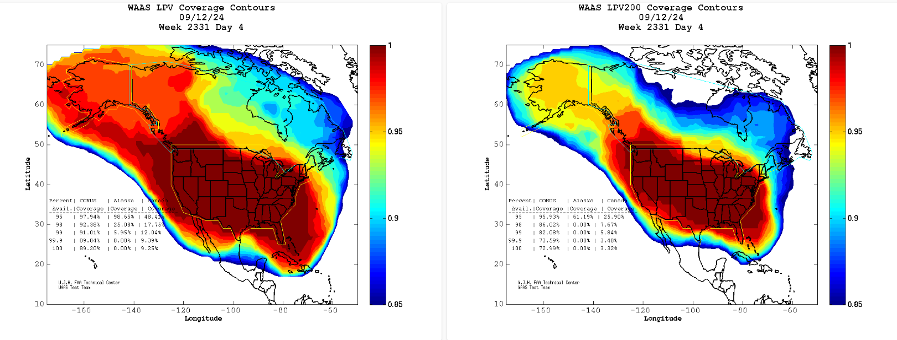
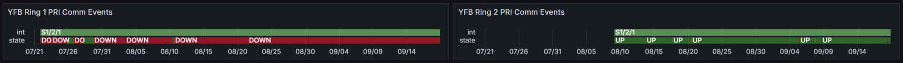

Weekly Highlights 20240911-20240918
9/12 - G3 Geomagnetic Storm
- 9/12 - G3
Geomagnetic storm impacted WAAS
coverage
- HNL GEO UDRE trips from 9/12 07:45 to 08:38
- ZAN GEO UDRE trips from 9/12 13:07 to 13:23
- ZSU GEO UDRE trips from 9/13 11:45 to 14:48

9/13 - ZKC WRE-A Power Interruption
- 9/13 21:49 - ZKC WRE-A unexpected power
interruption -- ref LIR
871499432; multiple Power Cycles
failed to restore;
T-shooting,& found PCU OFF-LINE,CYCLED BREAKER; restored to Normal at 9/14 03:06
9/16 - ZAN WRE-C Bias Err Trip
- 9/16 04:53 - ZAN WRE-C received SE 729 WRE Bias Err
9/17 - Reset ZLA COR-B to Address Comm Issues
- 9/16 13:15 - ZLA COR-B comms to ZTL and ZAU down hard; lines cleared after ZLA COR-B Reset at 9/17 01:09 (~11h 54m)
- 9/16 23:12 - MMX Ring 2 comms down hard; line cleared at 9/17 01:09 (~1h 57m)
- 9/17 01:02 - Reset ZLA COR-B Router to address various comm lines down; all lines restored at 9/17 01:09
9/17-9/19 - Circuit Installation for OTZ / Troubleshooting for BRW
SSM-WAAS-066 Circuits Outstanding
- OTZ - Following circuits
delivered
/ SA'd -- Circuit Validation
in progress...
- Ring 1 PRI to ZAU - FTIH-WS-053504
- Ring 2 PRI to ZLA - FTIH-WS-053508
- Ring 2 ALT to ZLA - FTIH-WS-053509
- BRW - Ring 2 ALT to ZLA -
FTIH-WS-053531
- 5/23 17:35 - BRW Ring 2
ALT comms down
hard --
ISR 0521-0090; ref LIR 802755624 - 9/17 17:45 - BRW Ring 2 ALT comms fixed and active
- 5/23 17:35 - BRW Ring 2
ALT comms down
hard --
9/18 - CM1 Intrusive Maintenance
- 9/18 07:03 - GUS Switchover - S15
- BR1 to Primary / CM1 to Backup for
S/A PM, KPA cleaning and Antenna maintenance-- ref LIR 841733832 - 9/18 15:29 - CM1 GUS to Maintenance for
PM, KPA cleaning and Antenna maintenance...
Various Comm Impacts
* Only captures major / long-term comm outages
Mexico Comms
- 9/11 05:04 - MTP Ring 1 comms down hard...
- 9/15 09:31 - MMD Ring 2 comms down hard; line cleared after ZLA COR-B Reset at 9/17 01:09 (~1d 15h)
- 9/15 19:06 - MMX / MPR / MSD Ring 1 comms down hard; all lines cleared at 9/15 19:24 (~17m 43s)
- 9/16 17:06 - MTP Ring 1 comms temporarily restored; line down hard again at 9/16 20:14...
- 9/16 23:12 - MMX Ring 2 comms down hard; line cleared after ZLA COR-B Reset at 9/17 01:09 (~1h 57m)
YFB Comms
- 9/18 10:24 - YFB Ring 2 comms down hard; line cleared at 9/18 10:42 (~18m)
Other Sites
- 9/11 06:13 - POC-ZLA Ring 1 ALT / Ring 2 PRI comms
down hard for
MR-187679-- ref LIR 854920524- Ring 1 ALT cleared at 9/11 06:17 (~3m 44s)
- Ring 2 PRI cleared at 9/11 06:48 (~34m 14s)
- 9/11 14:29 - YYR Ring 1 comms down hard; line cleared at 9/11 16:10 (~1h 40m)
- 9/11 17:31 - YYR Ring 1 comms down hard; line cleared at 9/11 18:00 (~28m)
- 9/15 19:17 - ZTL-ZDC / ZTL-ZLA Ring 1 COR-COR comms down hard; all lines cleared at 9/15 19:24 (~7m 15s)
- 9/15 21:50 - BIL Ring 1 PRI / Ring 2 ALT comms down hard; line cleared at 9/17 01:01 (~1d 3h)
- 9/18 10:23 - CM1 Ring 1 ALT / Ring 2 PRI comms down hard; line cleared at 9/18 10:42 (~19m)
YFB Ring 1 PRI
- 7/29 17:01 - YFB Ring 1 comms flapping then down hard at 7/29 19:10; loopback testing at 7/30 04:06...
- 7/31 05:08 - YYR Ring 1 down hard + loopback testing impacting YYR Ring 1 and YFB Ring 1 to troubleshoot YFB Ring 1 comms down since 7/29; last event for YYR Ring 1 cleared at 7/31 09:41 (~16389 seconds) -- YFB Ring 1 still down hard...
- 8/10 04:09 - YFB Ring 1 comms UP temporarily; started flapping again at 8/10 08:27 then down hard at 8/10 11:29...

List of current offline WREs
List of current offline WREs -- ref WAAS Status Monitor
All Depot shipments to Mexico are halted until the customs process can be finalized
- MMX WRE-C - 5/15-... - Processor failed and could not be restored
- MPR WRE-B - 5/3-... - Inits failing -- looks like a bad freq std; due to shipping issues, there is no spare Freq Std and no ETA to recover WRE-B...
5/11/23-... - MX Ring 2 Satcom Upgrade
MX WAAS Sites comm upgrades in progress:
- 6/5 - Troubleshooting at ZLA-Tijuana shows 4 of 5 circuits have a telco issue localized to Tijuana that must be resolved by FTI; for the MSD circuit, Tijuana could see a loop from ZLA, but ZLA could not see the loop locally -- possible cable issue at ZLA
- Frequentis coordinating with SENEAM at TJX to complete end-to-end testing from remote site to TJX
- After successful testing to TJX; comms should come up at ZLA (if not, coordinate with FTI Harris)
- MMX Ring 2 is currently up, but zero UDP packets are coming through
- MMD Ring 2 is currently up, but zero UDP packets are coming through

Major Events


Core I/F Dashboard (1/2)

Comm Events - ZLA / ZTL

Core I/F Dashboard (2/2)

Comm Events - ZDC / ZAU

Mexico Comm Status